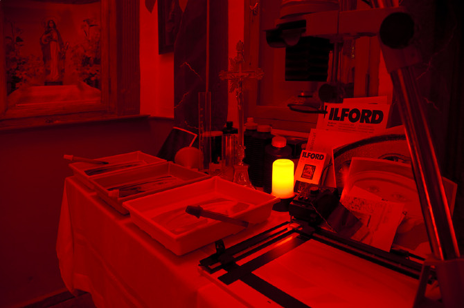
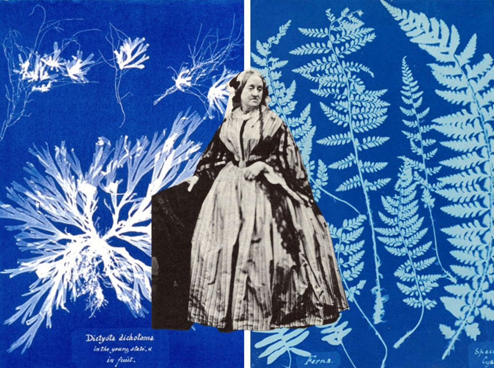

OTRO ROLLO LAB.
FOTOGRAFÍA ANALÓGICA
EN URUGUAY




Mujeres, arte, lucha y otros rollos
Para nuestro colectivo es importante -y necesario- visibilizar el trabajo de las mujeres y disidencias en el amplio mundo de la fotografía. Son muchas las precursoras y, ¡creemos que merecen ser recordadas! OTRO ROLLO LAB está compuesto por mujeres que apoyan a otras mujeres en el mundo audiovisual. En el mundo de la fotografía, como en otros muchos, cuando pensamos en grandes profesionales nos vienen a la mente mayoritariamente nombres masculinos: Cartier-Bresson, Capa, Brasai, Newman, etc. ¿Quiere esto decir que no ha habido mujeres en la historia de la fotografía? Nada más lejos de la realidad, las mujeres han jugado, y siguen jugando, un papel muy importante en el mundo de la fotografía.